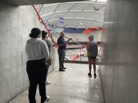
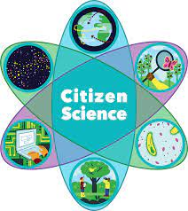
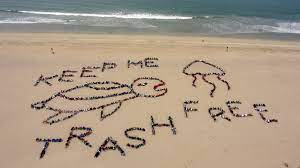
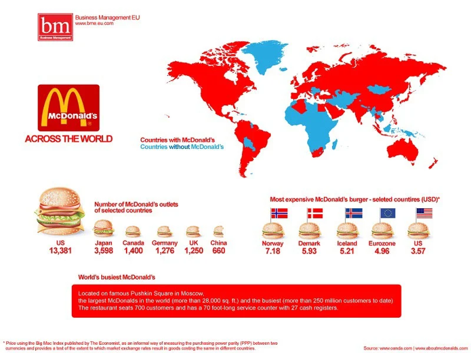

Maddie Engelman / July 19th, 2022
Elizabeth S. Friedman worked as a cryptologist during both World Wars and by deciphering enemy code she helped solve international smuggling cases during Prohibition. Elizabeth S. Freindman has worked for the United States Treasury, Coast Guard, Navy and Army, plus the International Monetary Fund. All of Friendman’s work has earned her the title of “America’s first female cryptanalyst".
Maddie Engelman / July 19th, 2022
Today in class we learned about aritifical intelligence. My partner, Zaria and I made a facial recognition intelligence machine. We took pictures of our faces from different angles so the computer could detect when we were infront of the camera.In the afternoon I reasearched Elizabeth S. Friedman who was America's first female cryptoogsit using HTML.
Maddie Engelman / July 20th, 2022
Today in class we went on a scavenger hunt around the campus. My group went to the dome, admissions office, i school, cafeteria, and link hall. We asked different faculty how they use data and technology in their job. My favorite interview was with a student named Trevor who has a job working with 3d printers. He showed us the printer and how it worked and at the end we got to keep little syracuse logo's that he printed earlier. I also really enjoyed the interview at the dome and below is an image of me interviewing Pete Sala as he showed us all the new improvments the dome is making on their technology.
Maddie Engelman / July 21st, 2022
The video below is a tutorial on how to insert audio into HTML. I really like this video because it takes you step by step exactly how to insert the audio into the code. Hope you enjoy the video!
Maddie Engelman / July 21st, 2022
Today in class we learned about citizen science which is when people from all over the world can participate in science experiments at home. Today in class my group had the idea of people from all over the United States sending in photos of cardinals to see where they are most populated. Another example of a possible idea for a citizen science projects is to see where has the cleanest beaches/oceans by having people from all over the world send in photos of their local beaches/oceans. By scientists knowing which beaches are the cleanest they can see what the citizens are doing to keep it so clean and can implement their ways into different places in the world who have dirty beaches/oceans.
 Maddie Engelman / July 22nd, 2022
Today in class we had a speaker on zoom talk to us about cybersecurity. The speaker mostly talked about phishing attacks where a hacker will send you an email with a message saying something like your bank account information was stolen and then a link to put down all your personal information. Like anything new threats will amerge we won't expect because as technology gets more advanced so will hacking. Hopefully the new technology created will be better at preventing hacking and catching the existing hackers but it is important that people are knowedgable on different types of hacking so they can protect their personal information.
Maddie Engelman / July 25th, 2022
Today in class we played bias or bust. While playing this game we learned about different types of biases as we either tried to prove or bust Jeanne's beliefs on how the world was flat or that America was the best country on Earth. We had to take account into Jeanne's race, home life, age, and intersts while trying to prove our points. Earlier today we learned tricks to make googling easier and more efficient and we used those tricks to find sources to prove our points. The game was very intersting as I learned about how much people's biases can effect their everyday life decisions.
Maddie Engelman / July 26th,2022
Today in class we learned how to tell a story using data. The chart below shows how many McDonalds are in each country and the most expensive burgers. I found in surprising how many McDonalds the United States have to other countries. But considering the obesity rate in the United States compared to other countries I guess I shouldn't be so surprsied. Another thing I didn't expect was for Norway's McDonalds burger to cost $7.18 USD. In America you can get a full meal for that price so it seems really expensive for just a McDonalds burger.
